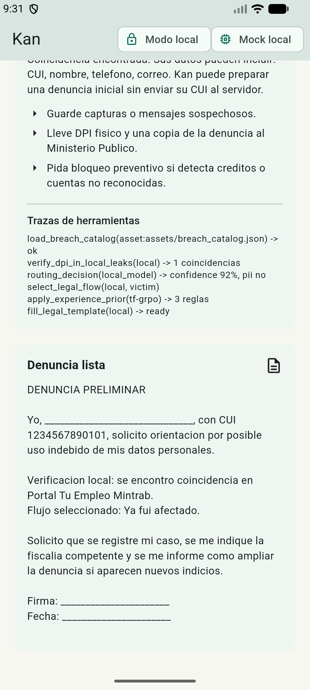
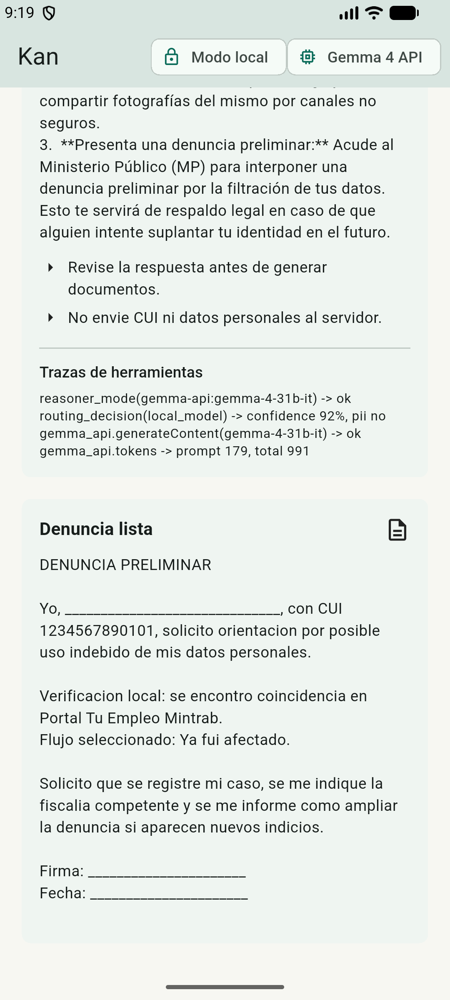
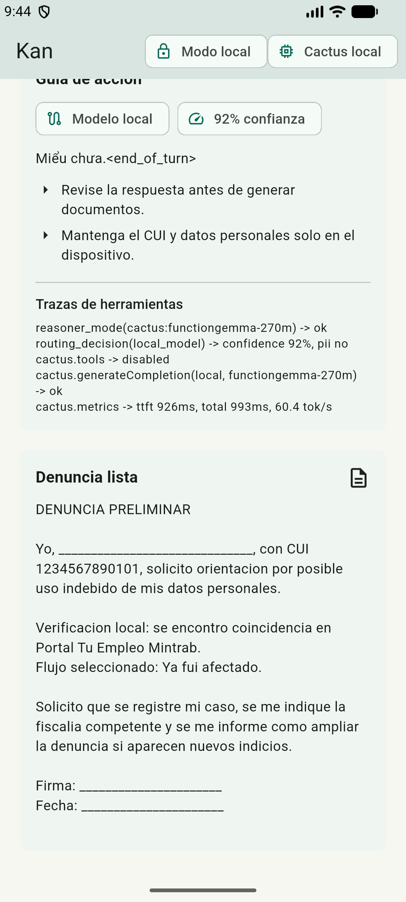

Install
Use an Android emulator or connected Android device. The local APK is the reliable classic flow; the LiteRT APK starts in offline Gemma mode for physical-device testing; the Citizen Gemma APK is the primary citizen/institution judge demo.
adb install -r zpk-local-release.apk
adb shell monkey -p gt.kan.kan_app 1adb install -r zpk-litert-release.apk
adb shell monkey -p gt.kan.kan_app 1adb install -r zpk-citizen-gemma4-release.apk
adb shell monkey -p gt.kan.kan_app 1For cable model install with the Citizen Gemma APK, put the model at /sdcard/Android/data/gt.kan.kan_app/files/models/gemma-4-E2B-it.litertlm.
Use synthetic CUI 1234567890101 for the main flow.
What The Demo Shows
- Offline ZPK identity registration with no cloud dependency.
- DID-style document, verifiable-credential-style recovery credential, and selective disclosure claims.
- Local Spanish guidance and preliminary complaint generation.
- Visible traces for catalog lookup, privacy routing, signed authentication proof, consent proof, signed revocation, encrypted audit storage, and redacted institutional packet.
- Signed ARM64 LiteRT APK with offline Gemma runtime status, install action, copyable diagnostics, and copyable agent traces for physical-device validation.
- Signed ARM64 Citizen Gemma APK with voice/photo/text intake, ReAct tool timeline, signed artifact, QR packet, and Modo Ventanilla.
- Separate evidence screenshots for hosted Gemma 4 and Cactus local inference.
- A narrated final demo video under 3 minutes.
Offline Trace

Gemma 4 Trace

Cactus Trace

Important Limits
- No real personal data or real breach data is included.
- This is not production legal advice.
- The local APK is default local mode; the LiteRT APK is for physical-device Gemma validation; the Citizen Gemma APK is the main judged product flow. None embeds a Gemini API key.
- Cactus tool-calling is not working yet; Cactus local inference is documented separately.
- ML Kit/AICore on-device Gemma generation requires supported hardware; the Mac emulator evidence shows a fail-closed fallback.
- Native Android LiteRT generation was exercised on the Honor physical device; keep public claims tied to captured UI evidence unless logcat traces are available.